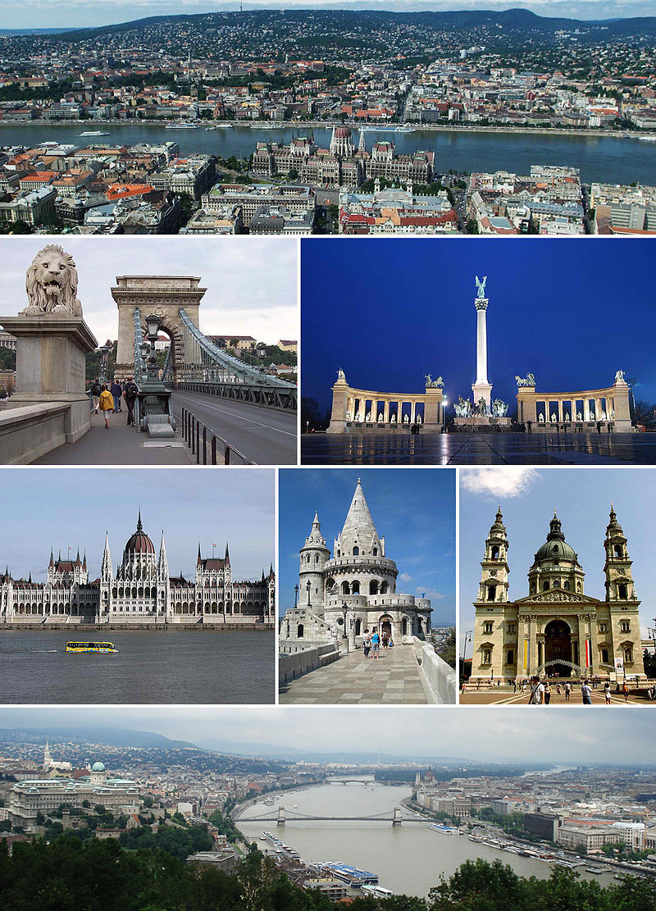

Mi vagyunk a DSZC Mechwart András Gépipari és Informatikai Technikum 9.b osztálya.
Erre az osztálykirándulásra egy pályázat megnyerésével jutottunk el, aminek nagyon örülünk.
Azért választottuk ezt a helyszínt, mert rengeteg szép látnivaló van, és reméljük, hogy nagyon sok érdekes élményt és emléket tudunk gyűjteni, amik örökre megmaradnak bennünk.
A rengeteg látnivaló és programlehetőség közül előre megterveztük azt, hogy hova akarunk ellátogatni.
